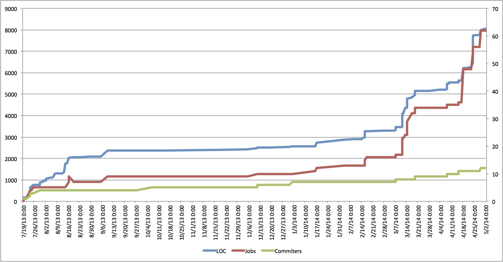
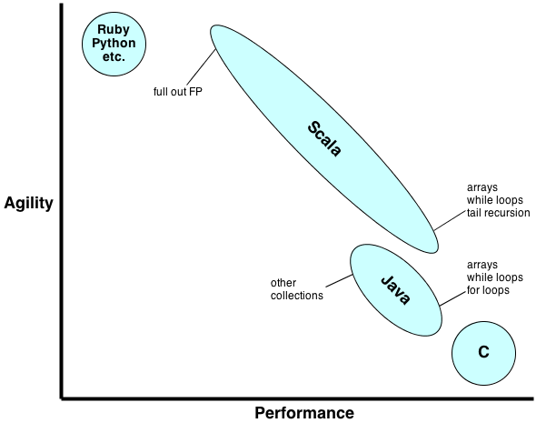

A Little Teaser
PGroupedTable<K,V>::combineValues(CombineFn<K,V> combineFn,
CombineFn<K,V> reduceFn) KeyedList[K, T]::reduce(fn: (T, T) => T)PairRDDFunctions[K, V]::reduceByKey(fn: (V, V) => V)Before
Now
rec-sys-scalding.git
Word count in Python
lyrics = ["We all live in Amerika", "Amerika ist wunderbar"]
wc = defaultdict(int)
for l in lyrics:
for w in l.split():
wc[w] += 1
Map and reduce are key concepts in FP
val lyrics = List("We all live in Amerika", "Amerika ist wunderbar")
lyrics.flatMap(_.split(" ")) // map
.groupBy(identity) // shuffle
.map { case (k, g) => (k, g.size) } // reduce
(def lyrics ["We all live in Amerika" "Amerika ist wunderbar"])
(->> lyrics (mapcat #(clojure.string/split % #"\s"))
(group-by identity)
(map (fn [[k g]] [k (count g)])))
import Control.Arrow
import Data.List
let lyrics = ["We all live in Amerika", "Amerika ist wunderbar"]
map words >>> concat
>>> sort >>> group
>>> map (\x -> (head x, length x)) $ lyrics
vectors.map { case (id, vec) => (id, vec * vec.T) } // YtY
.map(_._2).reduce(_ + _)
ratings.keyBy(fixedKey).join(outerProducts) // YtCuIY
.map { case (_, (r, op)) => (solveKey(r), op * (r.rating * alpha)) }
.reduceByKey(_ + _)
ratings.keyBy(fixedKey).join(vectors) // YtCupu
.map { case (_, (r, vec)) =>
val Cui = r.rating * alpha + 1
val pui = if (Cui > 0.0) 1.0 else 0.0
(solveKey(r), vec * (Cui * pui))
}.reduceByKey(_ + _)
Performance vs. agility
 http://nicholassterling.wordpress.com/2012/11/16/scala-performance/Type inference
class ComplexDecorationService {
public List<ListenableFuture<Map<String, Metadata>>>
lookupMetadata(List<String> keys) { /* ... */ }
}
val data = service.lookupMetadata(keys)
type DF = List[ListenableFuture[Map[String, Track]]]
def process(data: DF) = { /* ... */ }
Higher order functions
List<Integer> list = Lists.newArrayList(1, 2, 3);
Lists.transform(list, new Function<Integer, Integer>() {
@Override
public Integer apply(Integer input) {
return input + 1;
}
});
val list = List(1, 2, 3)
list.map(_ + 1) // List(2, 3, 4)
Collections API
val l = List(1, 2, 3, 4, 5)
l.map(_ + 1) // List(2, 3, 4, 5, 6)
l.filter(_ > 3) // 4 5
l.zip(List("a", "b", "c")).toMap // Map(1 -> a, 2 -> b, 3 -> c)
l.partition(_ % 2 == 0) // (List(2, 4),List(1, 3, 5))
List(l, l.map(_ * 2)).flatten // List(1, 2, 3, 4, 5, 2, 4, 6, 8, 10)
l.reduce(_ + _) // 15
l.fold(100)(_ + _) // 115
"We all live in Amerika".split(" ").groupBy(_.size)
// Map(2 -> Array(We, in), 4 -> Array(live),
// 7 -> Array(Amerika), 3 -> Array(all))
Scalding field based word count
TextLine(path))
.flatMap('line -> 'word) { line: String => line.split("""\W+""") }
.groupBy('word) { _.size }
Scalding type-safe word count
TextLine(path).read.toTypedPipe[String](Fields.ALL)
.flatMap(_.split(""\W+""))
.groupBy(identity).size
Scrunch word count
read(from.textFile(file))
.flatMap(_.split("""\W+""")
.count
Summingbird word count
source
.flatMap { line: String => line.split("""\W+""").map((_, 1)) }
.sumByKey(store)
Spark word count
sc.textFile(path)
.flatMap(_.split("""\W+"""))
.map(word => (word, 1))
.reduceByKey(_ + _)
Stratosphere word count
TextFile(textInput)
.flatMap(_.split("""\W+"""))
.map(word => (word, 1))
.groupBy(_._1)
.reduce { (w1, w2) => (w1._1, w1._2 + w2._2) }
Many patterns also common in Java
It's complex
It's slow
I don't want to learn a new language